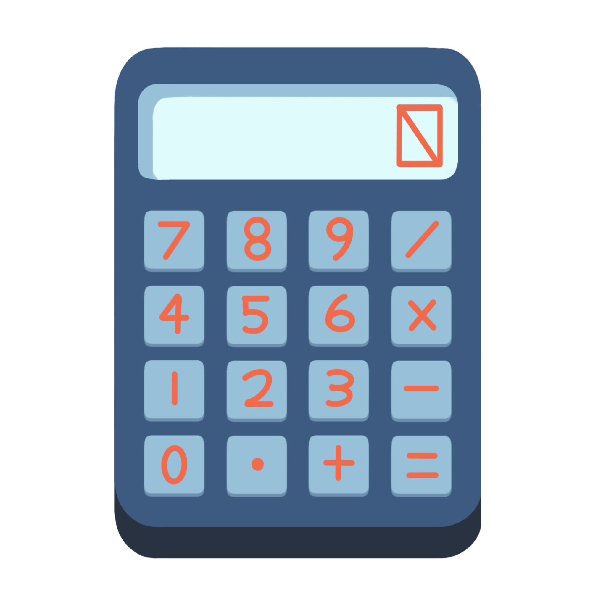
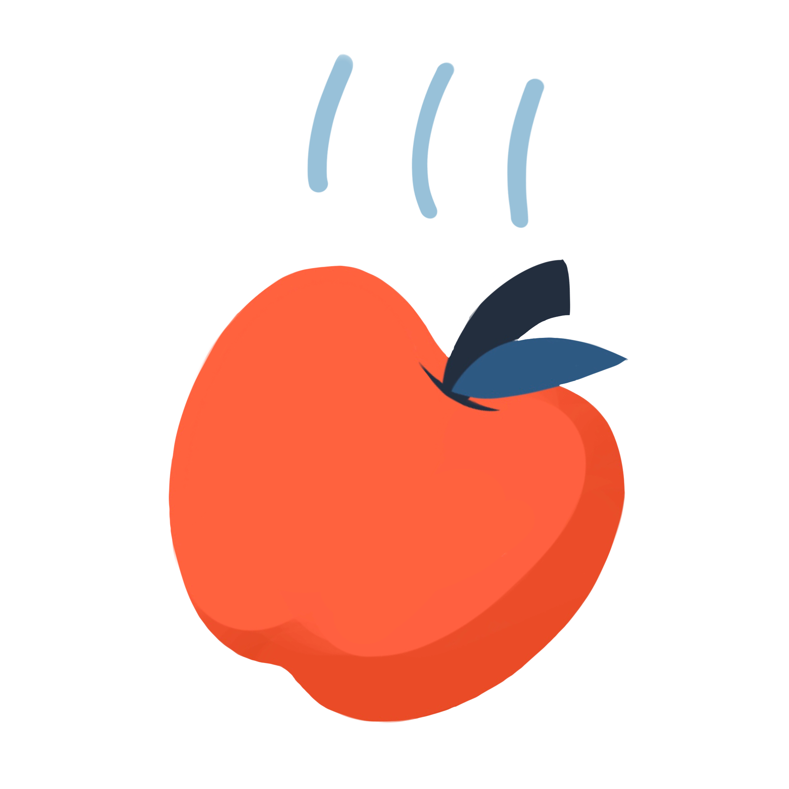
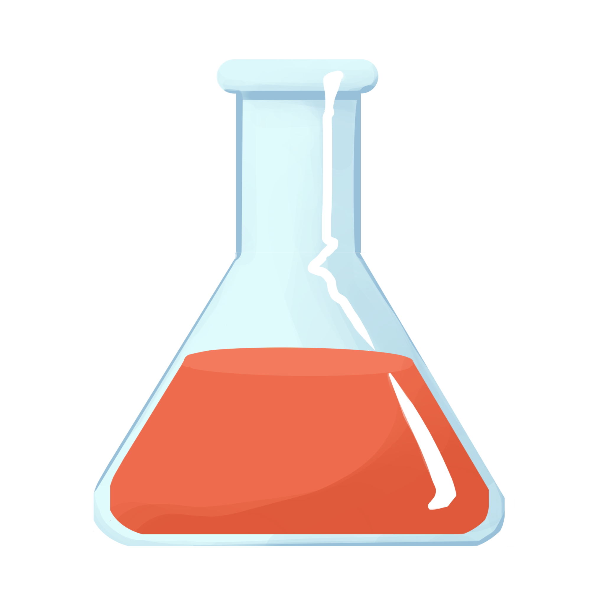

|  |
MathematicsOur tutors offer a learning experience from the perspective of a student. We help our students understand the fundamental concepts necessary to guarantee their success in current and future math classes in a way that is tailored to their learning styles. We offer help in all math courses up to Calculus BC. |
Computer ScienceOur tutors thoroughly understand the fundamental structures, algorithms, and logic of programming (loops, conditionals, variables, methods, etc.) that are applicable to almost all programming languages. If you are looking for help with a specific language, our tutors have experience with Python, JavaScript, HTML, CSS, Java, C++, C#. |
|
|  |
PhysicsOur tutors have experience with mechanics, Newton’s laws, kinematics, energy, momentum, electrostatics, fluid dynamics, circuits, and other topics. Although we do not offer tutoring in AP Physics C, our tutors have knowledge of calculus and can help with applications of calculus in kinematics. We offer tutoring in elementary and middle school physics, as well as high school physics up to the difficulty level of AP Physics 1 and 2. |
|  |
ChemistryOur tutors are well versed in topics from AP Chemistry such as stoichiometry, periodicity, covalent and ionic bonding, chemical reactions, acid/base, thermodynamics, etc. and can help students with chemistry up to the level of AP Chemistry. Our tutors will help teach students to gain an analytical understanding of principles in chemistry and apply these fundamental concepts to more complex problems. We do not offer tutoring in organic chemistry. |
EnglishOur English tutors can help students develop good reading and annotating habits, as well as teach students grammatical structures and key figures of speech to identify while reading. They can also provide helpful hints towards essay writing and time management. |
|
HistoryOur tutors have knowledge and experience with both World History and US History curriculums. We can help students recognize and understand patterns, overarching political, innovative, economic, environmental, cultural, and societal themes, and history’s relevance and applications to modern society and culture. |